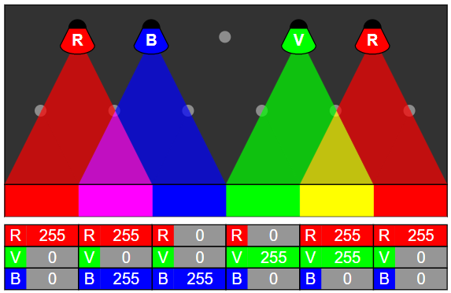

Ratkaisu
Alla on eräs vain neljä lamppua tarvitseva ratkaisu. Tämä ratkaisu on muuttanut valmiiksi annetun sinisen lampun paikkaa:

Voimme edetä väri kerrallaan yrittäen aina asettaa lampun niin korkealle kuin mahdollista (kuitenkaan rikkomatta tavoitetta), jotta tarvittavien lamppujen määrä olisi mahdollisimman pieni.
Aloitetaan punaisesta. Sen osalta yksi lamppu riittää:

Sitten vihreä. Tarvitsemme kaksi lamppua:

Ja lopuksi sininen. Tarvitsemme kolme lamppua. Ratkaisu on valmis:

Aloitetaan punaisesta. Tarvitsemme kolme lamppua, joista kaksi 50% ja yksi 100% voimakkuudella:

Sitten vihreä. Tarvitsemme kolme lamppua, joista kaksi 50% ja yksi 100% voimakkuudella:

Ja lopuksi sininen. Tarvitsemme kolme lamppua, joista yksi 50% ja kaksi 100% voimakkuudella. Ratkaisu on valmis:

Tämä on tietojenkäsittelyä!
Tietojenkäsittelyssä (kuten tekniikassa laajemminkin) kuvien värit esitetään usein käyttämällä RGB-värimallia, missä RGB tulee sanoista Red (punainen), Green (vihreä) ja Blue (sininen). RGB-värimallissa kukin väri esitetään yhdistämällä punaista, vihreää ja sinistä väriä sopivassa suhteessa. Kunkin värin määrä (intensiteetti) esitetään usein väliin 0-255 sijoittuvana kokonaislukuna. Esimerkiksi kolmikko (255, 105, 180) vastaisi RGB-värimallissa väriä, jossa punaisen intensiteetti on 255 (= maksimi), vihreän 105 ja sinisen 180: lopputuloksena syntyy (räikeähkö) vaaleanpunainen väri. Koska tällaisessa mallissa kunkin kolmen värin intensiteetti on välillä 0-255 eli on 256 eri intensiteettiä, kykenee tällainen ns. 24-bittinen RGB-värimalli esittämään yhteensä 256 × 256 × 256 = 16777216 eli vähän yli 16 miljoonaa erilaista väriä.
Näyttöteknologiassa (televisiot, tietokoneiden ja älypuhelinten näytöt, jne.) käytetään yleensä vastaavaa periaatetta. Esimerkiksi jos katsomme television ruutua suurennuslasilla, voimme havaita kunkin kuvan muodostavan alkeispisteen (ns. kuvapiste tai pikseli) koostuvan kolmesta vierekkäin asetetusta eri väristä. Kuvapisteet ovat niin pieniä, ettei ihmissilmä huomaa niiden kooostuvan erillisistä väreistä. Ihminen näkee kuvapisteen väriksi sen erillisten värien yhdistelmää vastaavan värin.

Ei ole sattumaa, miksi RGB-värimalli pohjautuu nimenomaan punaiseen, vihreään ja siniseen. Ihmisen silmän värinäkö perustuu siihen, että silmän verkkokalvolla on kolmenlaisia ns. tappisoluja. Niistä yhdet havaitsevat punaista, toiset vihreää ja kolmannet sinistä väriä.
Katso lisää esim. https://fi.wikipedia.org/wiki/RGB-värimalli, https://fi.wikipedia.org/wiki/Pikseli ja https://fi.wikipedia.org/wiki/Väriaisti.